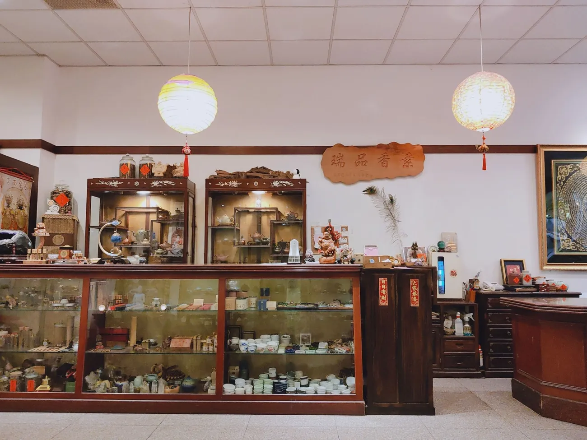

🌱 我們的故事
普門茶品創立於三峽北大特區,秉持著「以茶會友,以素養生」的理念,致力於提供健康美味的素食餐點與精緻茶品。
我們相信,飲食不僅是滿足口腹之慾,更是一種生活態度與心靈修養。透過精選的食材與用心的烹調,讓每一位來訪的賓客都能在品茗用餐中,感受到身心的放鬆與愉悅。
在這裡,沒有繁複的調味,只有食材最天然的美味;沒有喧囂的氛圍,只有寧靜舒適的用餐環境。我們期待與您分享這份對健康飲食的堅持與熱愛。

品茗素食 · 傳承健康生活之道
普門茶品創立於三峽北大特區,秉持著「以茶會友,以素養生」的理念,致力於提供健康美味的素食餐點與精緻茶品。
我們相信,飲食不僅是滿足口腹之慾,更是一種生活態度與心靈修養。透過精選的食材與用心的烹調,讓每一位來訪的賓客都能在品茗用餐中,感受到身心的放鬆與愉悅。
在這裡,沒有繁複的調味,只有食材最天然的美味;沒有喧囂的氛圍,只有寧靜舒適的用餐環境。我們期待與您分享這份對健康飲食的堅持與熱愛。
我們深信,好茶來自於對品質的堅持。普門茶品嚴選台灣各地優質茶園的茶葉,從阿里山高山茶、凍頂烏龍到日月潭紅茶,每一款茶都經過嚴格的挑選與品鑑。
茶農們在海拔高度適宜、氣候條件優良的環境中,以傳統工法結合現代技術,用心栽培每一片茶葉。我們與茶農直接合作,確保茶葉的新鮮度與品質,讓您品嚐到最純粹的台灣茶香。
無論是清香的綠茶、醇厚的烏龍,還是甘甜的紅茶,每一杯茶都承載著茶農的心血與大自然的恩賜。

普門茶品提供全素與蛋素的餐點選擇,所有食材皆嚴選自然、新鮮、無添加的優質原料。我們不使用人工添加物、味精或化學調味料,讓每一道菜都保有食材原本的美味與營養。
從主菜到湯品,從麵食到便當,我們用心研發每一道料理,運用天然香料與烹調技巧,創造出層次豐富、風味獨特的素食佳餚。無論您是素食者或是想嘗試健康飲食的朋友,都能在這裡找到滿意的選擇。
我們相信,素食不僅是一種飲食方式,更是一種對環境友善、對生命尊重的生活態度。

堅持使用天然食材,不添加人工添加物,讓每一口都是純粹的健康美味。
從選材到烹調,每一個環節都用心把關,確保提供最優質的餐點與服務。
以素食推廣環保與慈悲理念,尊重每一個生命,愛護我們的地球。
傳承中華茶文化與素食智慧,讓傳統美德在現代生活中延續。
以真誠的心對待每一位客人,提供溫暖貼心的用餐體驗。
注重環保與永續發展,為下一代留下更美好的環境。

舒適明亮的用餐空間,適合家庭聚餐與朋友聚會。

典雅的品茗空間,讓您在寧靜中品味好茶。

融合東方美學,營造禪意優雅的用餐氛圍。
在三峽北大特區開設第一家普門茶品,以健康素食與精緻茶品為核心理念。
憑藉優質的餐點與服務,逐漸獲得在地居民的喜愛與支持。
不斷研發新菜色,提升服務品質,成為三峽地區知名的素食餐廳。
持續推廣健康素食文化,期待與更多人分享美味與健康的生活方式。